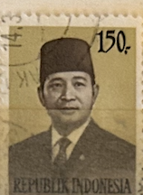
| SOURCE | TITLE| IMAGE MATCH | click to source page |
| HipStamp | DYNAMITE Stamps: Indonesia Scott #913 - USED | Asia - Indonesia, General Issue Stamp / HipStamp |  |
| Stamp Collecting Blog | Many faces of Indonesian Suharto definitive postage stamps of 1980/1987 (or quick peek into world of various meshes and screens in photogravure printing) |  |
| Dreamstime.com | Postage Stamp Printed in Indonesia Shows President Suharto, 1974-1976 Serie, 40 Rp - Indonesian Rupiah, Circa 1974 Editorial Photography - Image of head, suharto: 168031097 | 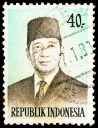 |
| PICRYL | Titiek Puspa 2020 stamp of Indonesia - PICRYL - Public Domain Media Search Engine Public Domain Search |  |
| Wikimedia.org | File:Soeharto, 10rp (1983).jpg - Wikimedia Commons | 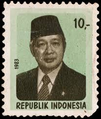 |
| eBay | Green Indonesian Stamps for sale | eBay |  |
| Shutterstock | April 26 2025 Jakarta Indonesia Postage Stock Photo 2628650907 | Shutterstock |  |
| ebid.net | BARBADOS, FISH, Sea Horse, red 1965, 3c on eBid Hong Kong | 191108298 | 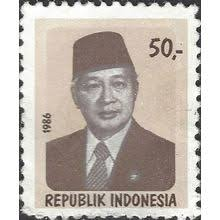 |
| HipStamp | Indonesia SC#1259 50 Rp President Suharto (1986) Used/Crease | Asia - Indonesia, General Issue Stamp / HipStamp |  |
| Shutterstock | Indonesia Circa 1979 Stamp Printed Indonesia Stock Photo 144022411 | Shutterstock |  |
| eBay | Indonesia 1951 100 sen Achmed Sukarno Conefo Used postal stamp | eBay | 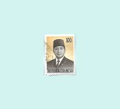 |
| Dreamstime.com | Suharto Circa Stock Photos - Free & Royalty-Free Stock Photos from Dreamstime |  |
| BidCurios | 1997 Germany 110 pf "Saar-Lor-Lux European Region" MNH Stamp - BidCurios | 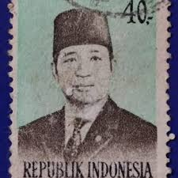 |
| 300 Indonesia stamps 및 우표 아이디어 찾기 | 동남아시아, 미로, 파충류 등 | 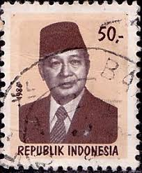 | |
| Shutterstock | Indonesia-circa 1986a Stamp Printed Indonesia Shows Stock Photo 69921973 | Shutterstock |  |
| Wikimedia.org | File:Stamp of Indonesia - 1983 - Colnect 256008 - President Suharto.jpeg - Wikimedia Commons | 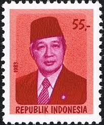 |
| Shutterstock | April 26 2025 Jakarta Indonesia Postage Stock Photo 2628651031 | Shutterstock | 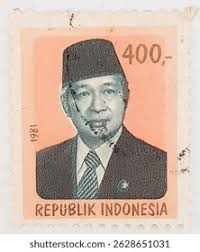 |
| alamy.it | INDONESIA - CIRCA 1989: Un francobollo stampato in Indonesia mostra che Suharto era un leader militare e politico indonesiano che serviva come secondo presidente Foto stock - Alamy | 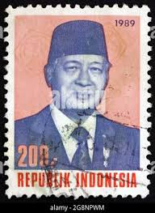 |
| Shutterstock | Pasuruan Indonesia August 29 2025 Stamp Stock Photo 2678680641 | Shutterstock | 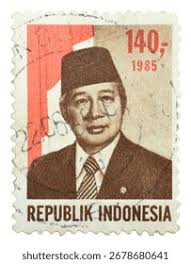 |
| Shutterstock | Pasuruan Indonesia August 29 2025 Stamp Stock Photo 2682603503 | Shutterstock |  |
| BOCS.EU | CSI 1998 december - Indonézia | 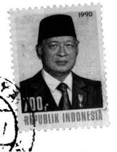 |
| Dreamstime.com | Postage Stamp Printed in Indonesia Shows President Suharto, Serie, 350 Rp - Indonesian Rupiah, Circa 1985 Editorial Photography - Image of portrait, postal: 168082532 | 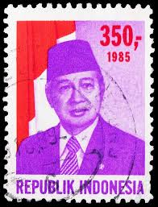 |
| lastdodo.de | Präsident Suharto 700,- (1990) - Indonesien - LastDodo | 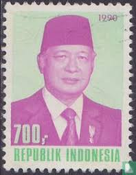 |
| Alamy | Indonesian rupiah old hi-res stock photography and images - Alamy | 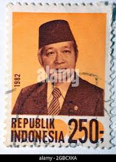 |
| iStock | Suharto Stamp Stock Photo - Download Image Now - Adult, Adults Only, Asia - iStock |  |
| Blogger.com | SUDAH JADOEL, KOENO LAGI: Desember 2010 | 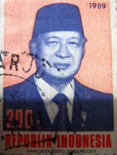 |
| eBay | Indonesia Politicians Stamps for sale | eBay | 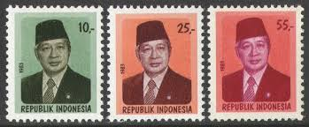 |
| Dreamstime.com | Postage Stamp Printed in Indonesia Shows President Suharto, 200 Rp - Indonesian Rupiah, Serie, Circa 1989 Editorial Photo - Image of 1989, state: 164637456 | 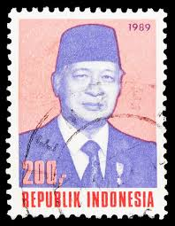 |
| Alamy | On September 22, 2019, President Donald Trump and Australian Prime Minister Scott Morrison toured the Pratt Industries plant in Wapakoneta, Ohio, accompanied by Pratt Industries Executive Chairman Anthony Pratt, to discuss manufacturing | 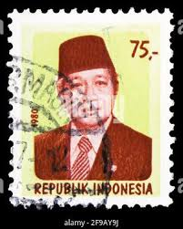 |
| eBay | Indonesia - Indonesie Issue 1988 (1342) President Soeharto | eBay | 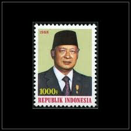 |
| ebid.net | INDONESIA, President Suharto, blue 1976, 200Rp, #2 on eBid United States | 215563910 | 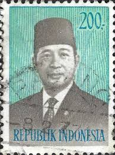 |
| Todocolección | sello usado indonesia 1967 pintura de raden sal - Buy Antique stamps of Indonesia on todocoleccion | 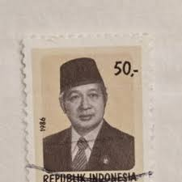 |
| Dreamstime.com | 907 Postage Stamp Indonesia Stock Photos - Free & Royalty-Free Stock Photos from Dreamstime | 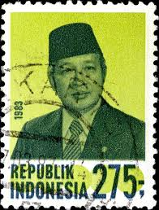 |
| Osta.ee | Indoneesia 1988, president Ahmed Sukarno. (226762808) - Osta.ee | 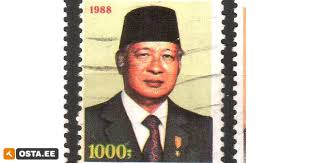 |
| Shutterstock | 6+ Hundred Suharto Royalty-Free Images, Stock Photos & Pictures | Shutterstock | 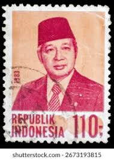 |
| nopaio.com | Catalog of Indonesia Definitive Stamp 印度尼西亚普通邮票目录世邮网nopaio.com | 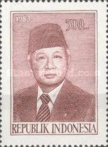 |
| Vecteezy | Page 5 | Square Stamp Stock Photos, Images and Backgrounds for Free Download | 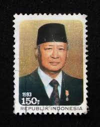 |
| Alamy | INDONESIA - CIRCA 1996: a stamp printed in Indonesia shows Suharto was an Indonesian military leader and politician who served as the second President Stock Photo - Alamy | 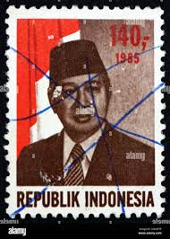 |
| Alamy | 300 rp indonesian rupiah hi-res stock photography and images - Alamy | 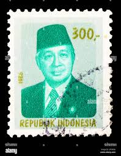 |
| PICRYL | Presiden Soeharto, Kabinet Pembangunan II - PICRYL - Public Domain Media Search Engine Public Domain Search | 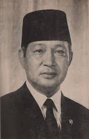 |
| Shutterstock | Pasuruan Indonesia August 29 2025 Stamp Stock Photo 2678680683 | Shutterstock | 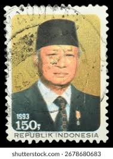 |
| ebid.net | CHINA, Tiger Hill Pagoda, lilac 1962, 10fen on eBid United States | 201546068 |  |
| Todocolección | indonesia, 1974, presidente suharto, yvert 708 - Buy Antique stamps of Indonesia on todocoleccion | 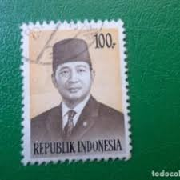 |
| eBay | Indonesia 1951 50 sen Achmed Sukarno Conefo Used postal stamp | eBay |  |
| ebid.net | MALTA, San Gwann Bosco, pink 1988, 10c on eBid Asia | 194272027 | 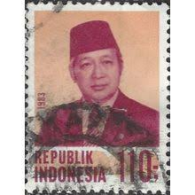 |
| Wikimedia.org | File:Soeharto, 1973.png - Wikimedia Commons | 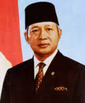 |
| cityofharrah.com | Indonesia 700 Different Stamps (stamps For Collectors Set Indonesia - Riau Stamps #32 - 40, MNH OG, Stamps Are Cupped, SCV $96.70 Indonesia 700 Different Stamps (stamps For Collectors Value | 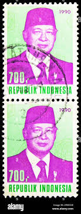 |
| Shutterstock | Suharto: Over 413 Royalty-Free Licensable Stock Photos | Shutterstock | 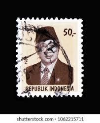 |
| Shutterstock | Pricing Head: Over 8,245 Royalty-Free Licensable Stock Photos | Shutterstock | 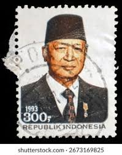 |
| eBay | Indonesia 1985, President Soeharto, MNH | eBay | 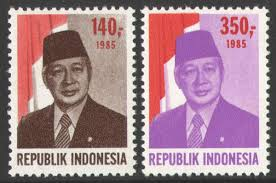 |
| Fandom | Double Collapse: Revamped | Alternative History | Fandom | 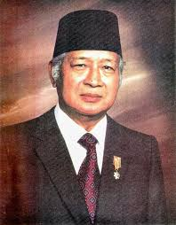 |
| EstateSales.org | Indonesian president Sukarno signed photo | EstateSales.org | 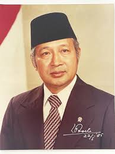 |
| Colnect | Stamp: President Sukarno (Indonesia(President Sukarno (1951-1953)) Mi:ID 115,Sn:ID 397,Yt:ID 69,Sg:ID 641,Zon:ID 92 📮 | 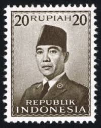 |
| Alamy | INDONESIA - CIRCA 1951: A stamp printed in the Indonesia, shows the first president of Indonesia, Sukarno, circa 1951 Stock Photo - Alamy | 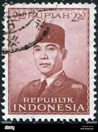 |
| Stamp Community Forum | Help With Indonesia Scott 387-400 Djakarta Vs Enschede Printings - Stamp Community Forum | 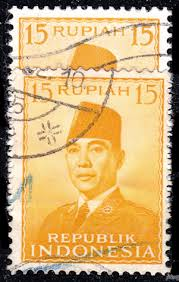 |
| Alamy | President sukarno hi-res stock photography and images - Page 3 - Alamy | 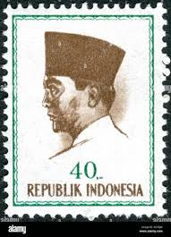 |
| Colnect | Stamp: 100 Tahun Bung Karno (Indonesia(Bung Karno) Mi:ID 2115,Sn:ID 1952,Yt:ID 1880,Sg:ID 2729,Zon:ID 2192 📮 | 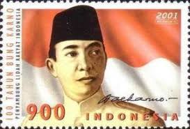 |
| Bob Shop | Indonesia - INDONESIA 1966 PRESIDENT SUKARNO 8 sen unused was listed for 2.00 on 18 Sep at 15:31 by Jessies in Newcastle (ID:625181578) | 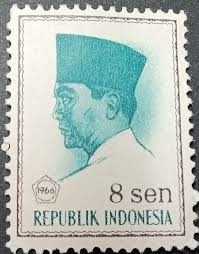 |
| eBay | Preços baixos em Selos postais de Políticos da Indonésia | eBay | 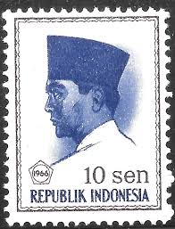 |
| Alamy | INDONESIA - CIRCA 1966: A stamp printed in Indonesia, shows President Sukarno by Basuki Abdullah, circa 1966 Stock Photo - Alamy | 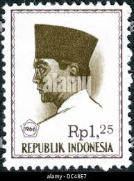 |
.jpg){kind=link}
{kind=link}
{kind=link}